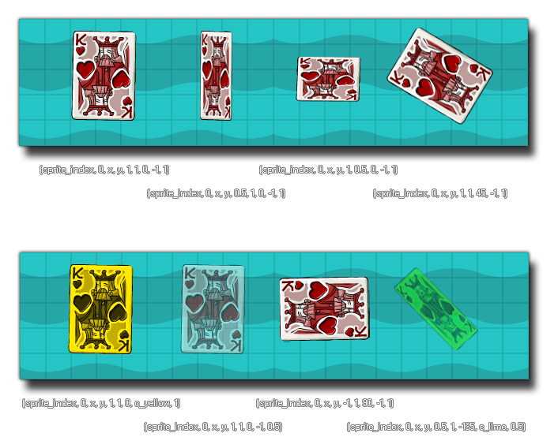

draw_sprite_ext( sprite, subimg, x, y, xscale, yscale, rot, color, alpha );
| Argument | Description |
|---|---|
| sprite | The index of the sprite to draw. |
| subimg | The subimg (frame) of the sprite to draw (image_index or -1 correlate to the current frame of animation in the object). |
| x | The x coordinate of where to draw the sprite. |
| y | The y coordinate of where to draw the sprite. |
| xscale | The x position on the sprite of the top left corner of the area to draw. |
| yscale | The y position on the sprite of the top left corner of the area to draw. |
| rot | The rotation of the sprite. 0=right way up, 90=rotated 90 degrees counterclockwise etc. |
| color | The color with which to blend the sprite. c_white is to display it normally. |
| alpha | The alpha of the sprite (from 0 to 1 where 0 is transparent and 1 opaque). |
Returns : N/A
This function will draw the given sprite as in the function draw_sprite but with additional options to change the scale, blending, rotation and alpha
of the sprite being drawn. Changing these values does not modify the resource in any way (only how it is drawn), and you can use any of the available
sprite variables instead of direct values for all the arguments in the function. The image below illustrates
how different values affect the drawing of the sprite:

NOTE : Blending is not available for the HTML5 target unless WebGL is enabled, in which case you should also be using the
sprite_set_cache_size function.
draw_sprite_ext(sprite_index, image_index, x, y, image_xscale, image_yscale, image_angle, image_blend, image_alpha);
This will draw the instances assigned sprite with all its default values (essentially the same as using draw_self).